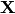
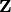
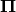
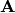
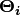
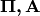

4.7. Hidden Markov Models¶
sklearn.hmm implements the Hidden Markov Models (HMMs). The HMM is a generative probabilistic model, in which a sequence of observable  variable is generated by a sequence of internal hidden state . The hidden states can not be observed directly. The transitions between hidden states are assumed to have the form of a (first-order) Markov chain. They can be specified by the start probability vector  and a transition probability matrix . The emission probability of an observable can be any distribution with parameters  conditioned on the current hidden state (e.g. multinomial, Gaussian). The HMM is completely determined by  and .
There are three fundamental problems for HMMs:
- Given the model parameters and observed data, estimate the optimal sequence of hidden states.
- Given the model parameters and observed data, calculate the likelihood of the data.
- Given just the observed data, estimate the model parameters.
The first and the second problem can be solved by the dynamic programming algorithms known as the Viterbi algorithm and the Forward-Backward algorithm, respectively. The last one can be solved by an iterative Expectation-Maximization (EM) algorithm, known as the Baum-Welch algorithm.
See the ref listed below for further detailed information.
References:
[Rabiner89] A tutorial on hidden Markov models and selected applications in speech recognition Lawrence, R. Rabiner, 1989
4.7.1. Using HMM¶
Classes in this module include MultinomalHMM GaussianHMM, and GMMHMM. They implement HMM with emission probabilities determined by multimomial distributions, Gaussian distributions and mixtures of Gaussian distributions.
4.7.1.1. Building HMM and generating samples¶
You can build an HMM instance by passing the parameters described above to the constructor. Then, you can generate samples from the HMM by calling sample.:
>>> import numpy as np
>>> from sklearn import hmm
>>> startprob = np.array([0.6, 0.3, 0.1])
>>> transmat = np.array([[0.7, 0.2, 0.1], [0.3, 0.5, 0.2], [0.3, 0.3, 0.4]])
>>> means = np.array([[0.0, 0.0], [3.0, -3.0], [5.0, 10.0]])
>>> covars = np.tile(np.identity(2), (3, 1, 1))
>>> model = hmm.GaussianHMM(3, "full", startprob, transmat)
>>> model.means_ = means
>>> model.covars_ = covars
>>> X, Z = model.sample(100)
Examples:
4.7.1.2. Training HMM parameters and infering the hidden states¶
You can train an HMM by calling the fit method. The input is “the list” of the sequence of observed value. Note, since the EM algorithm is a gradient-based optimization method, it will generally get stuck in local optima. You should try to run fit with various initializations and select the highest scored model. The score of the model can be calculated by the score method. The inferred optimal hidden states can be obtained by calling predict method. The predict method can be specified with decoder algorithm. Currently the Viterbi algorithm (viterbi), and maximum a posteriori estimation (map) are supported. This time, the input is a single sequence of observed values. Note, the states in model2 will have a different order than those in the generating model.:
>>> model2 = hmm.GaussianHMM(3, "full")
>>> model2.fit([X])
GaussianHMM(algorithm='viterbi',...
>>> Z2 = model2.predict(X)
Examples:
- example_plot_hmm_stock_analysis.py
4.7.1.3. Implementing HMMs with custom emission probabilities¶
If you want to implement other emission probability (e.g. Poisson), you have to implement a new HMM class by inheriting the _BaseHMM and overriding the methods __init__, _compute_log_likelihood, _set and _get for additional parameters, _initialize_sufficient_statistics, _accumulate_sufficient_statistics and _do_mstep.